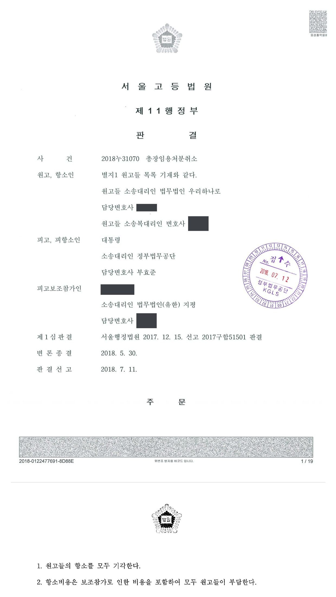
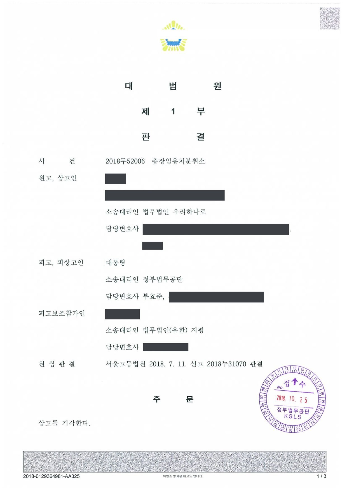

국립대학교 총장 임용처분 취소소송 (1·2·3심)
서울행정법원 2017구합51501 · 서울고등법원 2018누31070 · 대법원 2018두52006 · 담당변호사 부효준
판결문



사건의 요지
국립대학의 교수·학생 등 구성원들이 총장 임용처분의 취소를 구한 사건으로, 대학 구성원에게 총장 임용처분의 취소를 구할 원고적격이 있는지가 쟁점이 되었습니다.
이 사건의 언론보도 (1건)
- 2017. 12. 15.평화뉴스경북대 '2순위 총장임용 취소소송' 기각·각하국립대학교 총장 임용처분 취소소송 두 건(1순위 후보자·대학 구성원)의 1심 판결 보도
기사 제목을 누르면 해당 언론사의 기사가 새 창으로 열립니다. 기사 내용은 언론사의 것입니다.
사건의 주요 내용
국립대학의 총장은 대학의 추천을 받아 임용제청권자의 제청으로 임용권자가 임용합니다. 이 사건 대학은 총장임용추천위원회의 투표로 1·2순위 총장임용후보자 2명을 뽑는 간선제 방식을 택하고 있었고, 2014년 10월 추천위원회 투표를 거쳐 선정된 1·2순위 후보자를 같은 해 11월 임용제청권자에게 추천하였습니다.
그러나 임용제청권자는 2014년 12월 추천된 후보자를 임용제청하지 않기로 하고 후보자 재추천을 요청하였으며(임용제청 거부), 2015년 2월 다시 요청하였으나 대학은 응하지 않았습니다. 1순위 후보자가 임용제청 거부에 대하여 제기한 취소소송에서는 2015년 8월 이유제시의무 위반을 이유로 거부를 취소하는 판결이 선고되어 항소심이 진행 중이었습니다.
임용제청권자가 2016년 7월 다시 재추천을 요청하자, 기존 추천위원회는 2016년 8월 참석 위원 44명 중 36명의 찬성으로 2014년에 선정한 1·2순위 후보자를 그대로 재추천하기로 의결하였고, 대학 총장은 두 사람을 다시 추천하였습니다. 임용권자인 피고는 2016년 10월 그 가운데 2순위 후보자를 총장으로 임용하였습니다.
이에 이 사건 대학의 교수·재학생·졸업생 47명이 원고가 되어 총장 임용처분의 취소를 구하는 소송을 제기하였고, 임용제청권자가 피고 측에 보조참가하였습니다. 부효준 변호사는 피고를 대리하였습니다.
쟁점
- 총장 임용처분의 직접 상대방이 아닌 대학의 교수·재학생·졸업생에게 임용처분의 취소를 구할 원고적격(법률상 이익)이 있는지
- 헌법이 보장하는 대학의 자율성이나 교육공무원법령상 임용추천위원회 위원 자격 규정이 대학 구성원 개개인에게 총장후보자 선정에 참여할 구체적 권리를 부여하는지
원고의 주장
- 2014년의 총장후보자 선정행위가 그대로 존재하는데도 2016년 8월 다시 선정행위를 한 것은 선정행위의 본질에 반하여 위법하고, 설령 새로운 선정행위로 보더라도 선정규정이 정한 공모공고 절차, 추천위원회의 구성, 선정방법 등을 지키지 않은 위법이 있다고 주장하였습니다.
- 2016년 8월의 선정 결과에는 1·2순위가 있었는데 대학이 순위를 적지 않고 추천하여 선정 결과를 왜곡하였고, 임용제청권자는 대학 구성원의 의사를 배제한 채 성향에 맞는 후보자를 임명할 목적으로 이유 없이 임용제청을 거부하고 총장 부재 사태를 장기간 방치하였으므로, 임용처분은 재량권을 일탈·남용한 것이라고 주장하였습니다.
- 원고적격에 관하여는, 교수와 교수회에게 총장 후보자 선출에 참여할 헌법상 기본권이 있고, 교육공무원임용령 제12조의3이 교원·직원·재학생·졸업생을 임용추천위원회 위원이 될 수 있는 사람으로 정하여 이들의 참여 권리를 구체화·보호하고 있으므로, 위법한 추천행위로 참여 기회를 박탈당한 원고들에게 임용처분을 다툴 법률상 이익이 있다고 주장하였습니다.
부효준 변호사의 주장
- 원고들이 주장하는 총장후보자 선정에 참여할 권리는 총장임용후보자의 추천과 관련된 권리로서, 추천 절차를 관리하는 선정관리위원회 위원과 심사·추천을 담당하는 추천위원회 위원에게 인정되는 권리일 뿐이라고 본안전 항변을 하였습니다.
- 두 위원회의 위원이 아닌 원고들은 단지 위원으로 선발될 가능성이 있다는 것에 그치므로, 임용처분의 근거 법규와 관련 법규에 의하여 보호되는 개별적·직접적·구체적 이익이 없고, 따라서 임용처분의 취소를 구할 법률상 이익(원고적격)이 없어 소가 부적법하다고 주장하였습니다.
법원의 판단
법원은 처분의 직접 상대방이 아닌 제3자도 법률상 보호되는 이익을 침해당하면 취소소송을 낼 수 있으나 그 이익은 근거 법규·관련 법규에 의하여 보호되는 개별적·직접적·구체적 이익이어야 한다는 대법원 판례(2015. 7. 23. 선고 2012두19496, 19502 판결)를 전제로, 대학의 자율성은 헌법 제31조 제4항에 따라 '법률이 정하는 바에 의하여' 보장되므로 헌법상 기본권만으로 곧바로 원고적격을 인정할 수는 없다고 보았습니다.
이 사건 대학은 교육공무원법 제24조, 교육공무원임용령 제12조의3과 학칙·선정규정에 따라 선정관리위원회·추천위원회 위원의 투표로 후보자를 뽑는 간선제를 택하고 있으므로, 위원으로 선정된 뒤에야 선정에 참여할 구체적 권리가 생기고 교원·재학생·졸업생의 지위에서 위원이 될 가능성이 있다는 점만으로는 그런 권리가 없다고 판단하였습니다. 위원 후보군 전체에 원고적격을 인정하면 남소와 민중소송화의 우려가 있는 반면, 실제 위원·총장후보지원자·임용되지 못한 후보자 등이 다툴 수 있어 행정소송의 기능이 위축될 우려도 없다고 보았습니다.
아울러 임용처분은 특정인에게 총장 지위를 부여하는 효력을 가질 뿐 그 자체로 원고들의 법률상 지위에 영향을 미친다고 보기 어렵다고 하여 원고들의 소를 모두 각하하였고, 보조참가로 인한 부분을 포함한 소송비용은 원고들이 부담하게 되었습니다. 원고들이 불복하였으나 항소심(서울고등법원 2018누31070)과 상고심(대법원 2018두52006)을 거쳐 이 결론은 그대로 유지되었습니다.
행정처분의 직접 상대방이 아닌 제3자라 하더라도 당해 행정처분으로 법률상 보호되는 이익을 침해당한 경우에는 취소소송을 제기하여 당부의 판단을 받을 자격이 있다. 여기에서 말하는 법률상 보호되는 이익은 당해 처분의 근거 법규 및 관련 법규에 의하여 보호되는 개별적·직접적·구체적 이익이 있는 경우를 말하고, 공익보호의 결과로 국민 일반이 공통적으로 가지는 일반적·간접적·추상적 이익과 같이 사실적·경제적 이해관계를 갖는 데 불과한 경우는 여기에 포함되지 아니한다.
서울행정법원 2017구합51501 판결 이유 '2. 라. 판단 1)' (원고적격에 관한 법리)
이 사건 대학의 간선제 방식에 의하면 관리위원회와 추천위원회의 위원으로 선정되고 나서야 비로소 총장임용후보자의 선정에 참여하여 절차를 진행하고 의사를 반영할 구체적인 권리가 발생하고, 설령 2016. 8. 8. 개최된 추천위원회의 구성이 위법하여 이 사건 임용처분이 취소된다고 하더라도 위 각 위원회의 위원으로 선정되기 이전 단계에서 교원, 재학생, 졸업생의 지위에 있어 위 각 위원회의 위원으로 선정될 가능성이 있다는 점만으로는 총장임용후보자의 선정에 참여할 구체적인 권리가 발생한다고 볼 수 없다.
서울행정법원 2017구합51501 판결 이유 '2. 라. 판단 2) 나)'
이 사건 임용처분은 2순위 후보자에게 이 사건 대학 총장의 지위를 부여하는 효력을 가지는 것에 그치는데, 총장이 교무를 총괄하고 소속 교직원을 감독하며, 학생을 지도할 권한 및 법령의 범위 내에서 학칙을 제정하거나 개정할 수 있는 권한이 있고, 학칙에는 대학의 기본적 조직, 학위수여, 성적평가, 장학금 지원 등 교직원 및 학생에게 중대한 영향을 미치는 사항이 포함되어 있다고 하여도, 총장이 직접 그 권한을 행사하여 구체적인 행위로 나아가는 경우 이로 인하여 교원, 재학생 및 졸업생 등의 법률상 지위에 영향이 생길 수 있음은 별론으로 하고, 이 사건 임용처분 자체로 원고들의 법률상 지위에 어떠한 영향을 미친다고 보기 어렵다.
서울행정법원 2017구합51501 판결 이유 '2. 라. 판단 2) 마)'
※ 판결 이유 가운데 이 사건의 판단 기준이 된 부분을 그대로 옮긴 것으로, 당사자 이름 등은 가렸습니다.
이 사건이 보여 주는 것
행정처분을 직접 받은 사람이 아닌 제3자가 취소소송을 내려면 근거 법규·관련 법규가 보호하는 개별적·직접적·구체적 이익, 즉 원고적격이 있어야 합니다. 이 판결은 간선제로 총장후보자를 뽑는 국립대학에서 교수·학생·졸업생이라는 지위만으로는 총장 임용처분을 다툴 원고적격이 인정되지 않는다는 점을 분명히 하였습니다.
법원은 그 대신 실제로 위원회 위원으로 선정되어 선정 절차에 참여한 사람, 총장후보지원자, 추천되었으나 임용되지 못한 후보자 등 구체적 이해관계를 가진 사람이 임용처분의 적법성을 다툴 수 있다고 하였습니다. 임용·선정 절차의 위법을 문제 삼으려는 쪽은 누가 소송을 낼 수 있는지부터 가려야 하고, 반대로 처분청 입장에서는 본안 전에 원고적격을 다투는 것이 유효한 방어 방법이 될 수 있습니다.
비슷한 처분을 받으셨다면
행정처분은 처분이 있음을 안 날부터 90일 이내에 행정심판이나 취소소송으로 다투어야 하고, 기간이 지나면 돌이킬 수 없는 처분은 집행정지를 서둘러야 합니다. 처분서를 받은 날짜부터 확인해 드립니다.